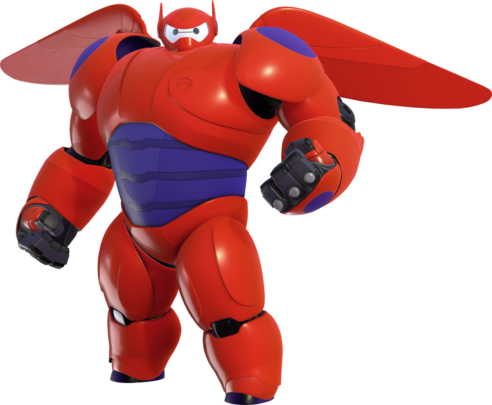
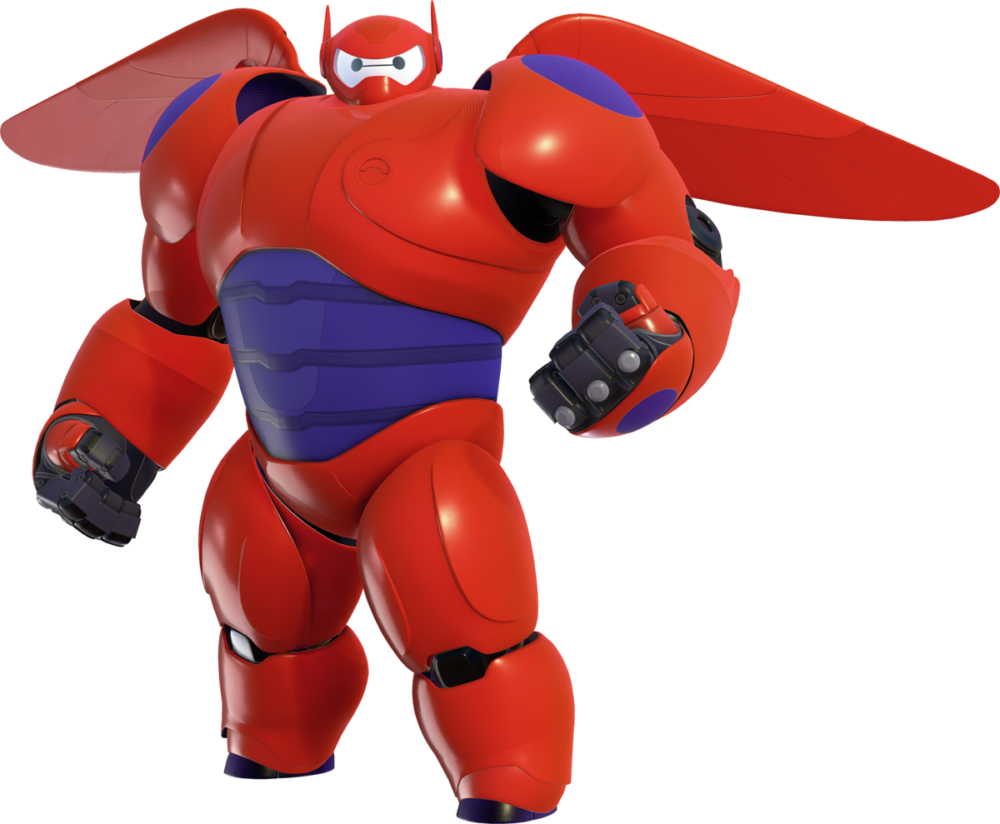

"Bonjour, je suis Baymax, votre assistant personel de soin et de santé."
 

je pense que pour la plupart vous connaisez tous Baymax le fameux robot médecin/super-héros du film les nouveaux héros et de la série Baymax et les nouveaux héros (suite au film). Sur cette page nous allons nous intéresser à son histoire, et ses différentes fonctions (donc ses programmes de puces).Mais aussi sur les épisodes de la série trés briévement résumé et pas toujours d'ailleurs.le film est trés mal résumé.